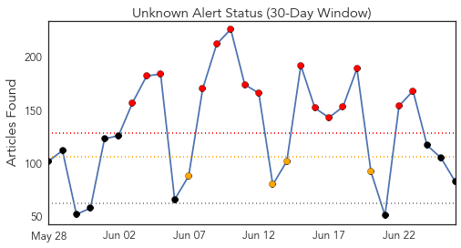
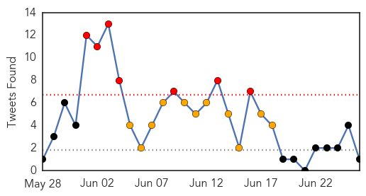
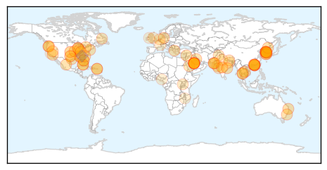
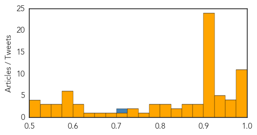

Unknown
30-Day Web Trend
15 alerts, 4 warnings

30-Day Twitter Trend
7 alerts, 1 warnings

Article Locations
Article Confidences
Top Articles:
- 0.999
- Update; Death toll rises to 31 due to outbreak
- 0.998
- South Korean man who was China's only MERS case recovers
- 0.998
- Another Samsung doctor contracts MERS
- 0.993
- Two more die of MERS in S Korea, including caregiver , news, Health News, AsiaOne YourHealth
- 0.992
- Fear in the air
- 0.990
- S Korea to jail people defying MERS quarantine measures
- 0.989
- South Korea passes new law to curb MERS outbreak
- 0.988
- South Korea hospitals to monitor emergency room visitors in battle on MERS
- 0.985
- South Korean hospitals ordered to track ER visitors in battle on MERS
- 0.978
- Pattaya News, Communities, Opinions and much more...
- 0.977
- Meningococcal case sparks warning
- 0.968
- Foreign Policy
- 0.964
- Six more anthrax cases detected in Koraput village
- 0.956
- South Korea To Track All Emergency Ward Visitors As 2 More Deaths Reported In MERS Outbreak
- 0.952
- CDC Warns of the Health Dangers of Pool Water
- 0.950
- China's first MERS patient discharged from hospital
- 0.949
- Indonesia at high risk of MERS: officials
- 0.947
- Officials check Bangkok hospitals' readiness to treat MERS cases
- 0.945
- New illnesses mean more reason to watch out for ticks
- 0.928
- South Korean man who sparked Mers health scare in China discharged from hospital
- 0.923
- S Korea passes law to contain deadly MERS outbreak
- 0.917
- Chicago Tribune
- 0.917
- Chicago Tribune
- 0.917
- Chicago Tribune
- 0.917
- Chicago Tribune
- 0.917
- Chicago Tribune
- 0.917
- Chicago Tribune
- 0.917
- Chicago Tribune
- 0.917
- Chicago Tribune
- 0.917
- Chicago Tribune
- 0.917
- Chicago Tribune
- 0.917
- Chicago Tribune
- 0.917
- Chicago Tribune
- 0.917
- Chicago Tribune
- 0.917
- Chicago Tribune
- 0.917
- Chicago Tribune
- 0.917
- Chicago Tribune
- 0.917
- Chicago Tribune
- 0.917
- Chicago Tribune
- 0.917
- Chicago Tribune
- 0.917
- Chicago Tribune
- 0.909
- Private hospitals adhere to MERS control guidelines, MOPH says
- 0.907
- S. Korea Passes New Law to Curb MERS Outbreak
- 0.904
- Swimming pool, hot tub water contamination increasing in the U.S.
- 0.892
- Ticks and Lyme disease
- 0.878
- “Flesh‐eating” virus claims its fourth victim this year in Mississippi
- 0.877
- 86 Alabama Children Who Attended Same Daycare Sick With Possible Food-Borne Illness, S. Aureus Toxin Found
- 0.867
- Indonesia at high risk of MERS
- 0.866
- INSTANT VIEW 6-U.S. Supreme Court makes gay marriage the law of the land
- 0.850
- No new MERS cases for two South Korea hospitals
Showing top 50 articles...
Top Tweets:
- 0.705
- RT: MERS in SouthKorea update: over 170 cases all linked to health care facilities where MERS patients were treated. http://t…
Dengue Fever
30-Day Web Trend
3 alerts, 1 warnings

30-Day Twitter Trend
2 alerts, 0 warnings

Article Locations

Article Confidences

Top Articles:
- 0.995
- Dengue cases in Malaysia
- 0.985
- Over 8,000 Yemenis stricken with dengue fever
- 0.983
- NGO's Plans to Fight Dengue in Border Refugee Camps
- 0.886
- Water tank removed
- 0.830
- States directed to act to prevent dengue
- 0.829
- States directed to act to prevent dengue
- 0.676
- New, more fatal dengue strain leaves Malaysian Health Ministry searching for answers
- 0.624
- Yemen UN releases emergency funding for relief efforts in crisis-torn country
- 0.541
- Impact of climate change on diseases in rural and urban Bangladesh
- 0.521
- Nadda directs health officials to gear up for monsoon
Top Tweets:
- 0.630
- Flavivirus news: Dengue fever cases continue to rise - Myanmar Times: Dengue fever cases contin... http://t.co/CGUwNdS0wr pathogenposse